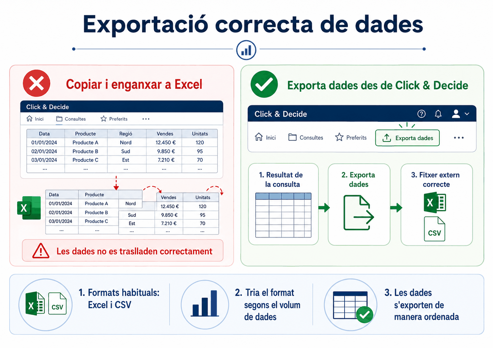
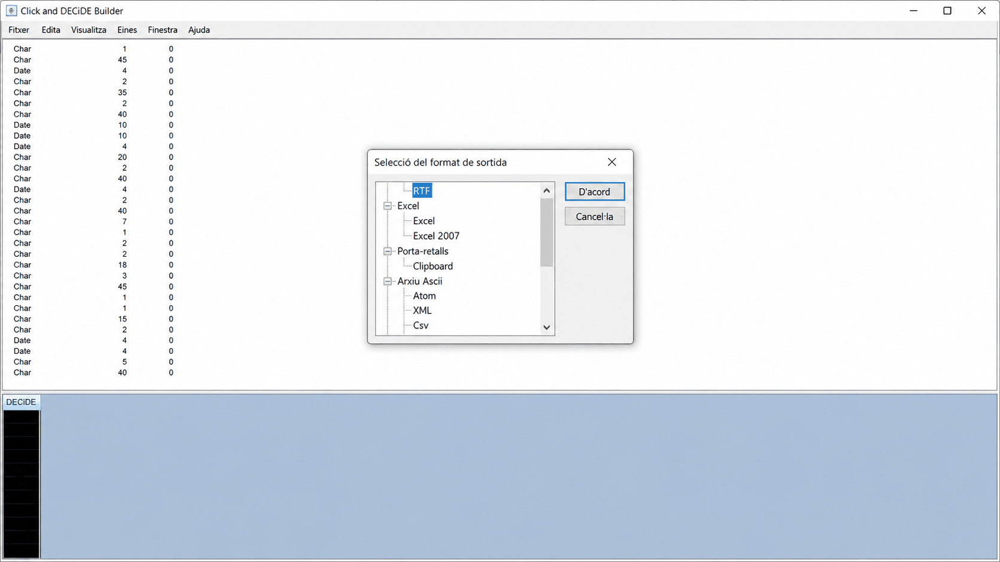
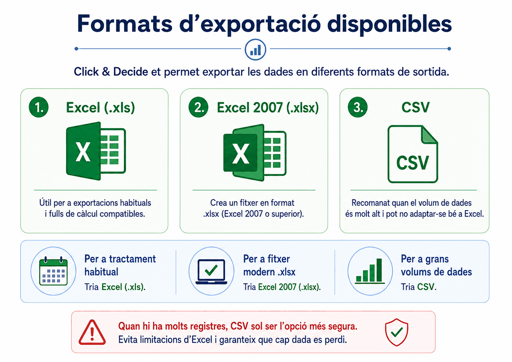
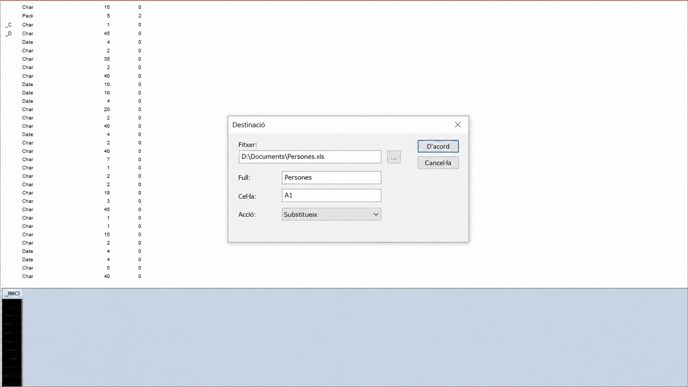
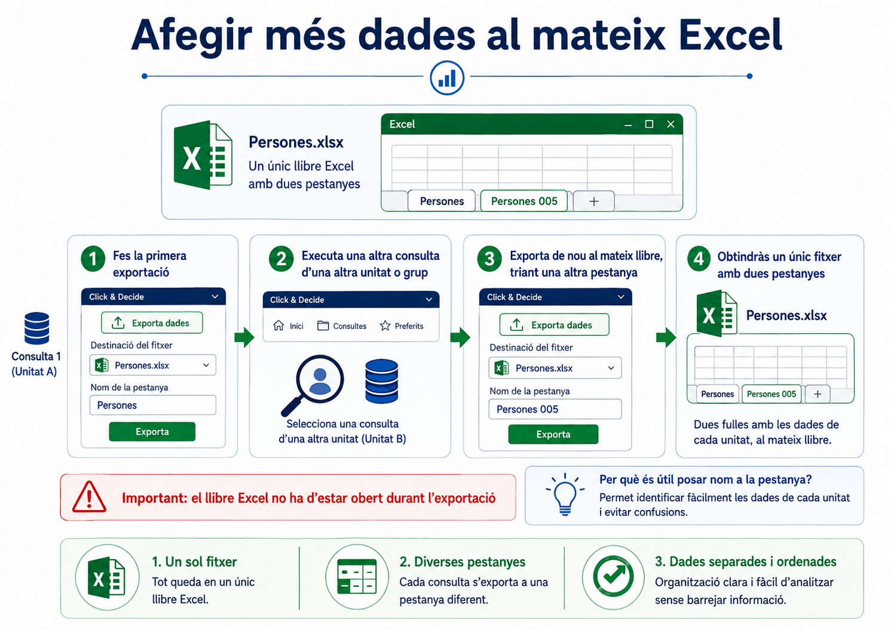
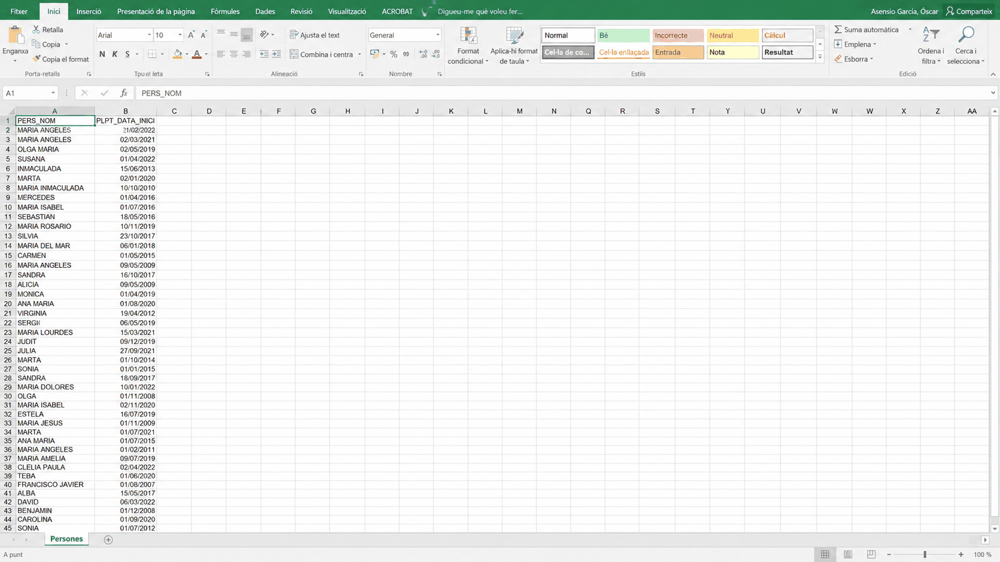

Apartat 1L'error de copiar i enganxar
Amb el resultat a la graella, el primer impuls és seleccionar-lo, copiar-lo i enganxar-lo a l'Excel. És l'error més comú de la unitat.
Si copieu i enganxeu, les dades no es traspassen amb l'estructura correcta: les columnes es desconfiguren. No és una qüestió estètica; és que el resultat no serveix per treballar-hi.
El programa té una eina d'exportació pròpia i és l'única manera correcta de fer-ho.

Apartat 2El botó Exporta dades
En prémer-lo s'obre la finestra Selecció del format de sortida, amb totes les opcions que ofereix el programa.
Apartat 3L'arbre de formats
Els formats no són una llista plana: estan agrupats per famílies, i n'hi ha bastants més dels que es fan servir.

| Família | Conté | Quan |
|---|---|---|
| Excel | Excel i Excel 2007 | El cas habitual. Apartat següent. |
| Arxiu Ascii | Csv, XML, Atom i altres | Volums grans, o per carregar en una altra eina. |
| Porta-retalls | Clipboard | Enganxar en una altra aplicació, però amb l'estructura ben feta. |
| RTF | Document de text amb format | Poc habitual. |
Fixeu-vos que Clipboard és una opció d'exportació. Si el que voleu és enganxar en una altra aplicació, aquest és el camí correcte: passa per l'exportador i manté l'estructura. No té res a veure amb seleccionar la graella i copiar-la.
Apartat 4Excel o Excel 2007
La diferència evident és el format del fitxer:
Excel
Genera un fitxer .xls, el format antic.
Excel 2007
Genera un fitxer .xlsx, el format modern.
Però n'hi ha una segona, que no és evident i que decideix quina heu de triar:
Recordeu la unitat 4: els camps Char van
farcits d'espais fins a la seva longitud.
- Excel exporta el valor tal qual, amb els espais de farciment inclosos.
- Excel 2007 els elimina i exporta els valors nets.
Per això, en general, Excel 2007 és la millor opció.
Perquè els espais sobrants trenquen els creuaments. Un
BUSCARV entre dues taules no troba Cultura si en una
hi diu Cultura i a l'altra Cultura seguit de
tretze espais. I com que a la pantalla es veuen igual, es perden hores
buscant l'error en un altre lloc.
Apartat 5Quan cal CSV
El CSV no és una preferència estètica: és obligatori quan el volum de registres és molt elevat i no cabria als fulls d'un Excel.
Volums normals
Excel 2007. Es pot obrir directament i treballar-hi.
Volums molt grans
CSV. És un fitxer de text i no té el límit de files del full de càlcul.
El tractament d'un CSV és de tipus text, i això vol dir que després l'haureu d'obrir amb una eina que el sàpiga llegir bé, indicant el separador i la codificació.

Apartat 6La finestra Destinació
Un cop triat el format i acceptat, apareix una finestra de desament normal on poseu nom i carpeta. Després n'apareix una segona, i és la important.

| Camp | Per defecte | Què fa |
|---|---|---|
| Fitxer | El que heu triat | On es desarà. |
| Full | Sheet 1 | El nom de la pestanya dins de l'Excel. Val la pena canviar-lo. |
| Cel·la | A1 | On començaran les dades. |
| Acció | Substitueix | Què fer si el fitxer ja existeix. És la clau de l'apartat següent. |
Deixar-lo com a Sheet 1 costa poc ara i molt d'aquí a tres
mesos, quan tingueu quatre llibres oberts i cap pestanya digui què conté.
És el mateix criteri que el nom de les consultes de la unitat 4.
Apartat 7Acumular fulls en un llibre
Aquesta és la tècnica que fa que la unitat valgui la pena. Podeu anar afegint diferents consultes al mateix fitxer d'Excel, cada una en una pestanya.
-
Exporteu la primera consulta
Poseu-hi nom de fitxer, per exemple
Persones, i nom de full, per exemplePersones. -
Canvieu el criteri de la consulta
Per exemple, per obtenir les dades d'una altra unitat directiva.
-
Torneu a exportar al mateix fitxer
A Exporta dades, trieu el mateix fitxer
Personesque ja existeix. -
Poseu un nom de full diferent
A la finestra Destinació, al camp Full, escriviu un nom nou. Si hi deixeu el mateix, el programa n'hi afegirà un de propi.
Perquè això funcioni i no doni error, el fitxer d'Excel de destinació ha d'estar tancat. No podeu exportar a un fitxer que teniu obert a la pantalla.


Apartat 8Errors freqüents
El que passa
Les columnes surten desquadrades.
Dóna error en exportar.
El BUSCARV no troba res, i els valors es veuen iguals.
M'ha esborrat el full anterior.
No hi caben totes les files.
El que passa de veritat
Heu copiat i enganxat. Feu servir Exporta dades.
Teniu el fitxer de destinació obert. Tanqueu-lo.
Espais de farciment. Exporteu amb Excel 2007.
Heu repetit el nom del full, o l'Acció era substituir.
Massa registres per a un full de càlcul. Exporteu a CSV.
Apartat 9Exercicis
La primera exportació
Reprodueix
Amb la consulta Persones executada, exporteu-la a
Excel 2007 amb el nom de fitxer
Persones i el full anomenat Persones.
Obriu el fitxer i comproveu tres coses.
Comprovació
- Les capçaleres són a la fila 1 i cada camp té la seva columna.
- La pestanya de baix es diu
Personesi noSheet 1. - El nombre de files és el nombre de registres de la consulta, més una de capçalera.
Aquesta tercera comprovació és la que detecta que us heu deixat un filtre o que heu exportat una consulta antiga.
Els espais invisibles
TrencaExporteu la mateixa consulta dues vegades, amb els dos formats:
- Un cop amb Excel.
- Un cop amb Excel 2007.
A cada fitxer, poseu-vos en una cel·la de text i mireu la fórmula
=LLARG(A2), que compta caràcters.
Què hauria d'haver passat
Al fitxer .xls, la llargada coincidirà amb la longitud del camp que vau veure a la unitat 4, no amb la del text visible. Un nom de quatre lletres en un camp de divuit us dirà 18.
Al fitxer .xlsx, us dirà 4.
Els dos fitxers es veuen idèntics a la pantalla. Aquesta és la diferència que fa fallar els creuaments, i és invisible fins que no la busqueu expressament.
Un informe amb quatre pestanyes
ResolUs demanen un únic fitxer d'Excel amb quatre pestanyes, una per cada vincle: funcionaris, interins, laborals i eventuals.
Expliqueu el procediment i digueu on us podeu equivocar.
Solució
Procediment, repetit quatre vegades:
- Canvieu el criteri
PLRC_VINCLE_CODIal codi que toqui. - Executeu i comproveu el nombre de registres.
- Exporta dades → Excel 2007.
- El mateix fitxer les quatre vegades.
- Un nom de full diferent cada vegada: Funcionaris, Interins, Laborals, Eventuals.
On us podeu equivocar:
- Tenir l'Excel obert mentre exporteu. Error segur.
- Repetir el nom del full: us el renombrarà ell.
- Oblidar-vos d'executar després de canviar el criteri: exportaríeu el resultat anterior. Aquest és el silenciós.
La millora: si aquest informe us el demanen cada mes, no repetiu quatre vegades el canvi de criteri. Feu-ne una consulta amb paràmetre, que és exactament la unitat següent.
Apartat 10Llista de comprovació
- Explicar per què no s'ha de copiar i enganxar.
- Trobar el botó Exporta dades i la seva opció de menú.
- Situar els formats dins de l'arbre de famílies.
- Dir la diferència entre Excel i Excel 2007, la del format i la dels espais.
- Justificar per què els espais de farciment trenquen els creuaments.
- Saber quan és obligatori el CSV.
- Omplir els quatre camps de la finestra Destinació.
- Posar nom al full en comptes de deixar-hi
Sheet 1. - Acumular diverses consultes en pestanyes d'un mateix llibre.
- Recordar que el fitxer de destinació ha d'estar tancat.
Si heu arribat a l'exercici EX-15-3 pensant que repetir quatre vegades la mateixa feina és absurd, teniu raó. La unitat 16 hi posa remei: consultes que pregunten en comptes de consultes que s'editen.